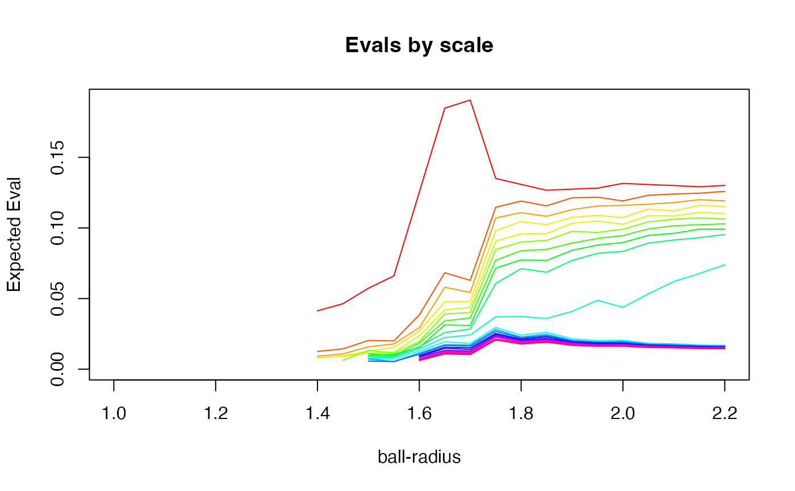

multiscaleSVD.RdMaggioni's multi-scale SVD algorithm explores the dimensionality of a dataset by investigating the change in eigenvalues with respect to a scale parameter. The scale parameter is defined by the radius of a ball that sits at each point in the data. The ball, at each scale, is moved across the dataset and SVD is computed within the intersection of the ball and the data at each point. The shape in this collection of eigenvalues, with respect to scale, enables us to estimate both signal and noise dimensionality and scale. The estimate can be computed efficiently on large datasets if the sampling is chosen appropriately. The challenge, in this algorithm, is classifying the dimensions of noise, curvature and data. This classification currently uses variations on heuristics suggested in work by Maggioni et al.
multiscaleSVD(x, r, locn, nev, knn = 0, verbose = FALSE, plot = 0)
| x | input matrix, should be n (samples) by p (measurements) |
|---|---|
| r | radii to explore |
| locn | number of local samples to take at each scale |
| nev | maximum number of eigenvalues to compute |
| knn | randomly sample neighbors to assist with large datasets. set k with this value. |
| verbose | boolean to control verbosity of output |
| plot | boolean to control whether we plot results. its value determines which eigenvector off which to base the scale of the y-axis.' |
list with a vector of tangent, curvature, noise dimensionality and a a dataframe containing eigenvalues across scale, in correspondence with r:
dim: The tangent, curvature and noise dimensionality vector. The data dimensionality is the first entry, the curvature dimensionality exists from the second to the first entry of the noise vector.
noiseCutoffs: Dimensionalities where the noise may begin. These are candidate cutoffs but may contain some curvature information.'
evalsVsScale: eigenvalues across scale
evalClustering:data-driven clustering of the eigenvalues
http://www.math.jhu.edu/~mauro/multiscaledatageometry.html
sphereDim = 9 embeddDim = 100 n = 1000 if ( usePkg( "pracma" ) ) { sphereData = pracma::rands( n, sphereDim, 1. ) mysig = 0.1 spherEmbed = matrix( rnorm( n * embeddDim, 0, mysig ), nrow = n, ncol = embeddDim ) spherEmbed[ , 1:ncol( sphereData ) ] = spherEmbed[ , 1:ncol( sphereData ) ] + sphereData myr = seq( 1.0, 2.2, 0.05 ) # scales at which to sample mymssvd = multiscaleSVD( spherEmbed, myr, locn=5, nev=20, plot=1 ) }